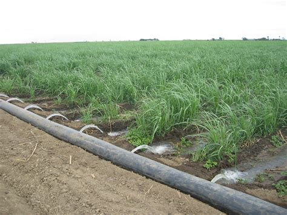
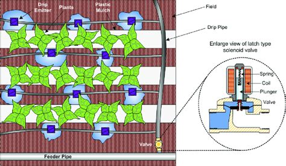
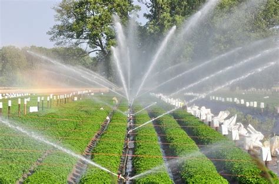
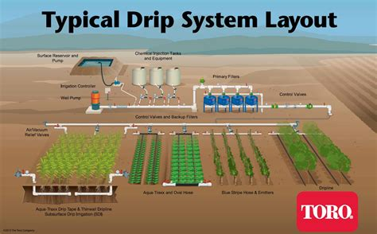
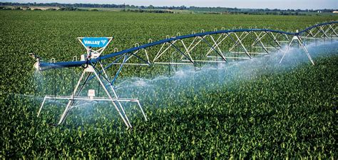
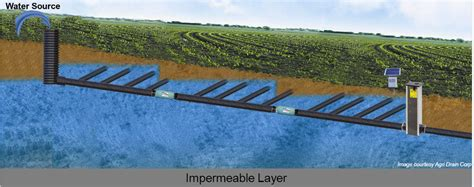

TYPES OF IRRIGATION
There are different types of irrigation practised for improving crop yield. These types of irrigation systems are practised based on the different types of soils, climates, crops and resources. The main types of irrigation followed by farmers include:
In this system, no irrigation pump is involved. Here, water is distributed across the land by gravity.
Localized Irrigation:
In this system, water is applied to each plant through a network of pipes under low pressure.
Sprinkler Irrigation:
Water is distributed from a central location by overhead high-pressure sprinklers or from sprinklers from the moving platform.
drip Irrigation:
In this type, drops of water are delivered near the roots of the plants. This type of irrigation is rarely used as it requires more maintenance.
centre pivot Irrigation:
In this, the water is distributed by a sprinkler system moving in a circular pattern.
Sub Irrigation:
Water is distributed through a system of pumping stations gates, ditches and canals by raising the water table.
Manual Irrigation:
This a labour intensive and time-consuming system of irrigation. Here, the water is distributed through watering cans by manual labour.